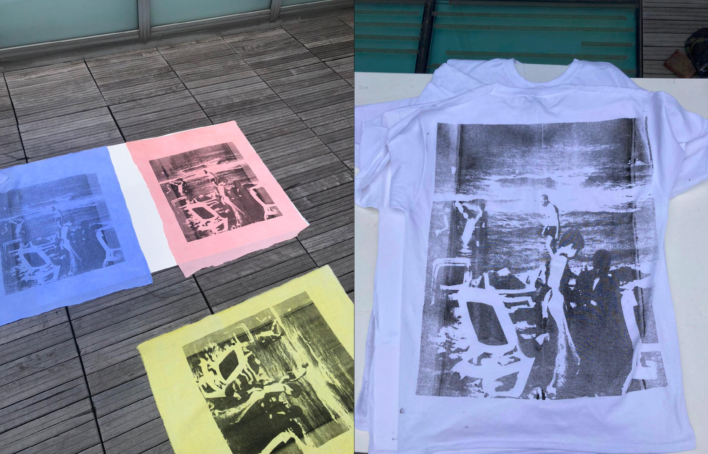

À propos du sujet
J’ai imprimé l’une de mes photographies sur un tissu coloré par le biais de la technique de sérigraphie. Pour
cette création, j’ai utilisé de l’encre naturelle, que j’ai moi-même fabriquée spécialement pour l’occasion.
Cette encre est composée d’ingrédients naturels tels que des pigments végétaux et des liants organiques, afin de limiter l’impact environnemental de la production de ce projet.
